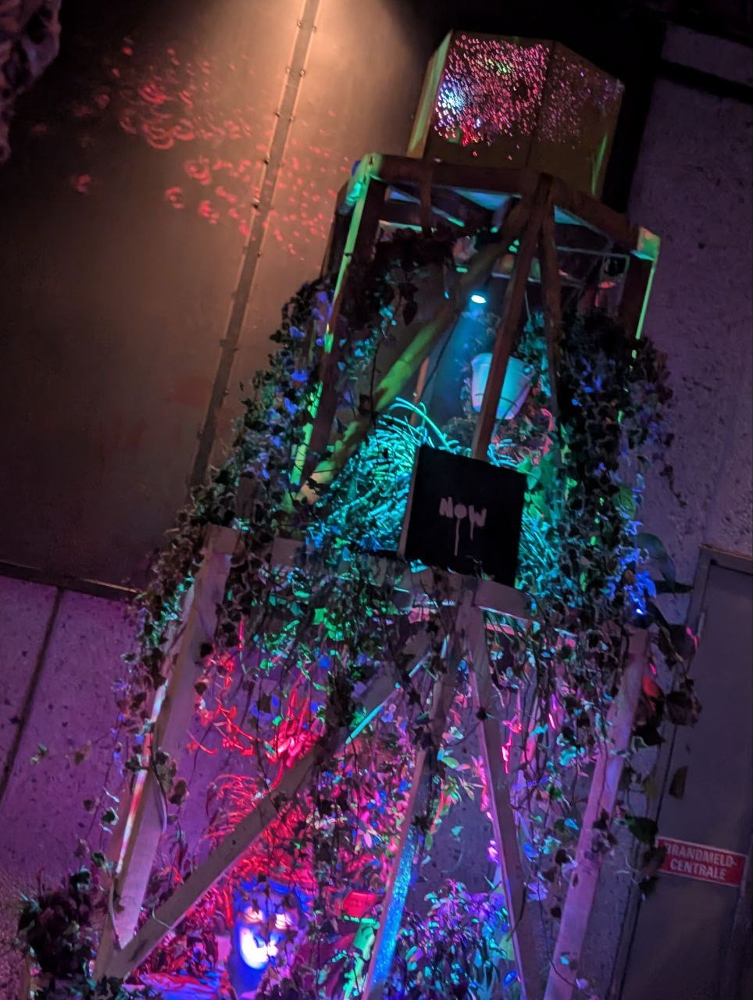
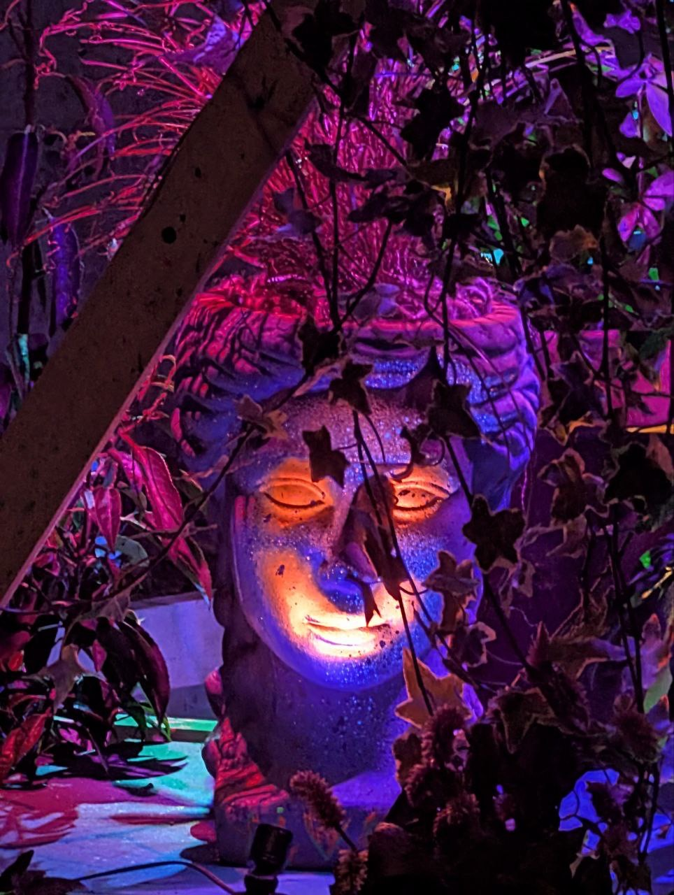
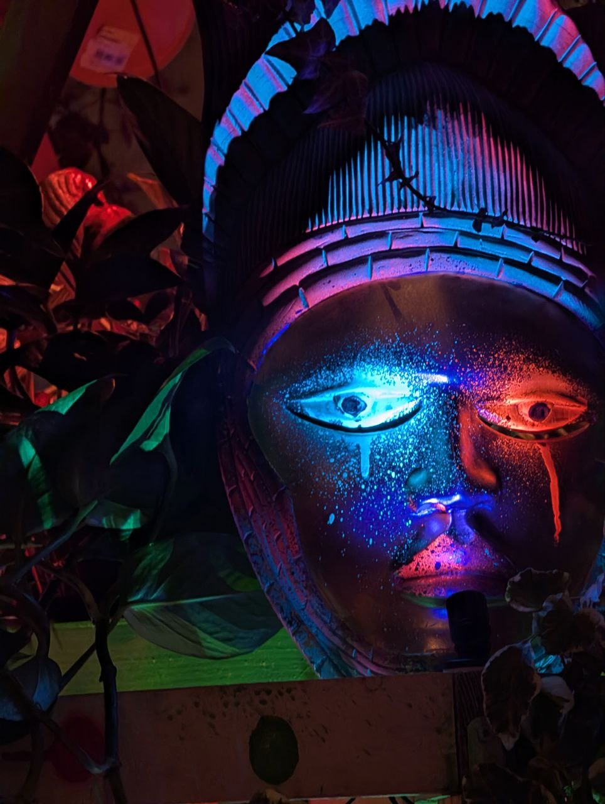
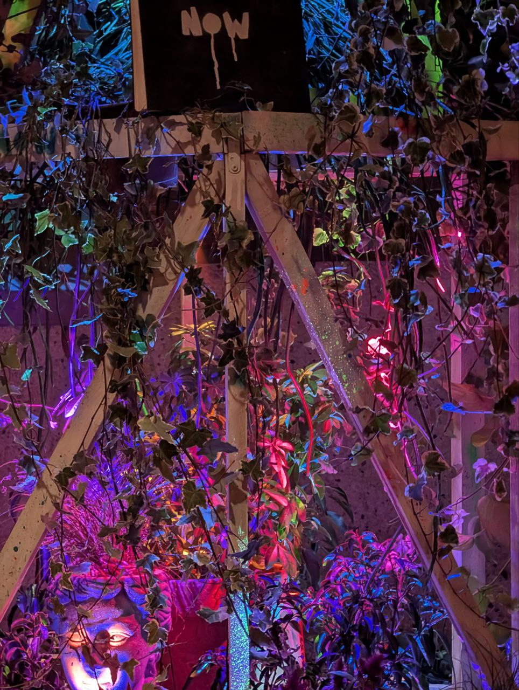
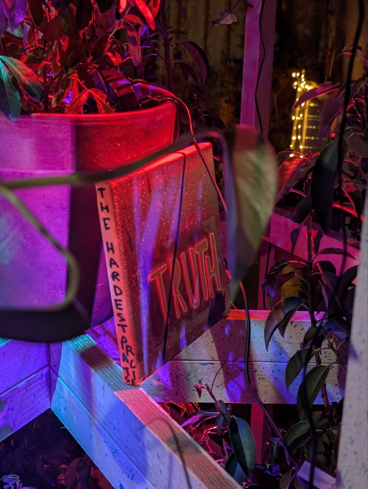

02 — Project
Florabeacon The Lighthouse of New Growth
Florabeacon, the Lighthouse of New Growth, is the top half of The Lighthouse of Now Here, reimagined for the Burning Man Decompression in Amsterdam.
At Nowhere 2025, the five-metre Lighthouse was the event’s “not-Temple”: a guide for the lost and a space for raw and honest connection. Its lower half was an intimate space, by no accident in plain sight, where anyone could step inside to spend time with themselves, with NowHere, or with the book.
For Decompression, the top half took on a new life. Instead of a beckoning signal, it gave off a colourful pulse. The beacon was concealed behind a perforated hexagonal cover, and as it rotated, it scattered coloured beams across the walls and ceiling, an inverted disco ball filling the chill space with stars and galaxies.
The structure itself became home to potted plants, herbs and house plants closed off from the public: a quiet reminder to just be, and to feel connected to nature. Pillows around the Lighthouse turned it into an open space to settle in and watch the light drift by.
Credits
- Concept & project lead
- Marie
- Team
- Kirill (@kndrart), Quirky




